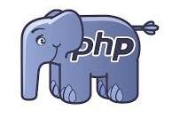
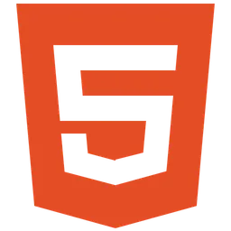
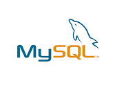

PHP
Niveau : Avancé
Framework : SymfonyÉtudiant BTS SIO SLAM
Développeur en formation spécialisé dans les solutions logicielles (SLAM), je conçois des applications web et logicielles en mettant l'accent sur la fonctionnalité et l'expérience utilisateur.
Actuellement en 2ème année de BTS SIO, je souhaite m'orienter vers une Licence professionnelle Développement Web/Mobile l'année prochaine.
Mon objectif immédiat : Intégrer une équipe technique pour une alternance d'un an afin de valider mon diplôme et apporter mes compétences en PHP/Symfony ou React sur vos projets réels.
Email :
Localisation :
Meslay-du-Maine
Permis :
B – Véhicule personnel
Âge :
19 ans

Niveau : Avancé
Framework : Symfony
Niveau : Maîtrisé
Framework : React
Niveau : Maîtrisé

Niveau : Maîtrisé

Niveau : Intermédiaire

Niveau : Intermédiaire
Option SLAM (Solutions Logicielles et Applications Métiers)
Institut Informatique Appliquée (IIA) – Saint-Berthevin
Mention Assez Bien
Lycée Touchard Washington – Le Mans
Afin de rester à jour sur les dernières évolutions du web et de la cybersécurité, je réalise une veille active via différents médias spécialisés.
Suivi de l'émission de Thomas Gautier (v2f) axée sur l'actualité tech, le développement et les coulisses du métier d'ingénieur/développeur.
Veille sur la cybersécurité et les nouvelles technologies à travers les enquêtes et les analyses de Micode (YouTube / Underscore).
Documentation officielle (MDN, Symfony, React) et newsletters spécialisées pour suivre l'évolution des frameworks.